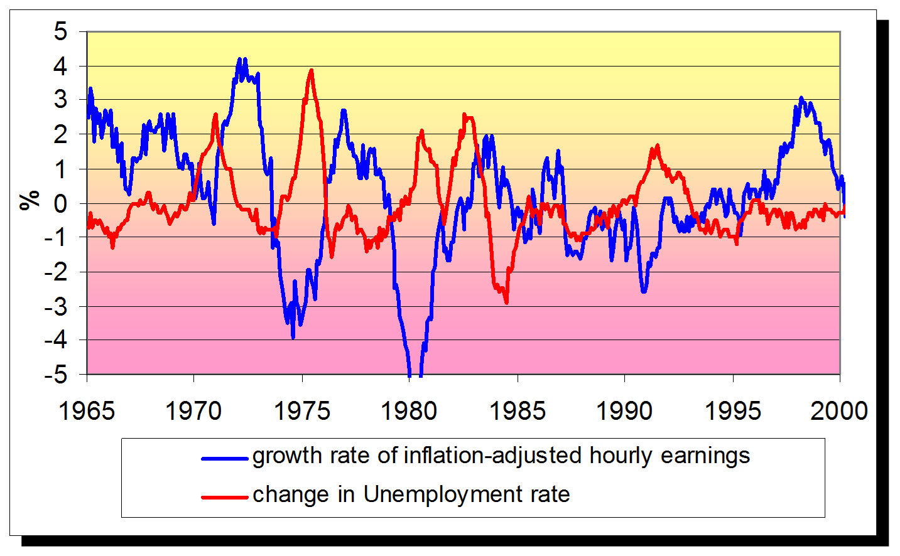
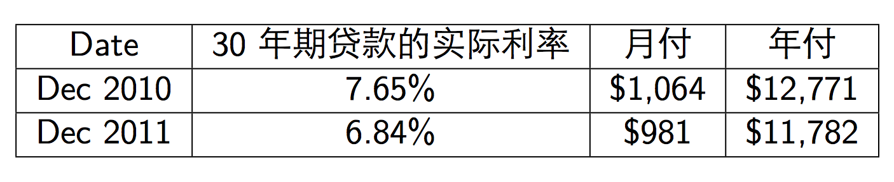
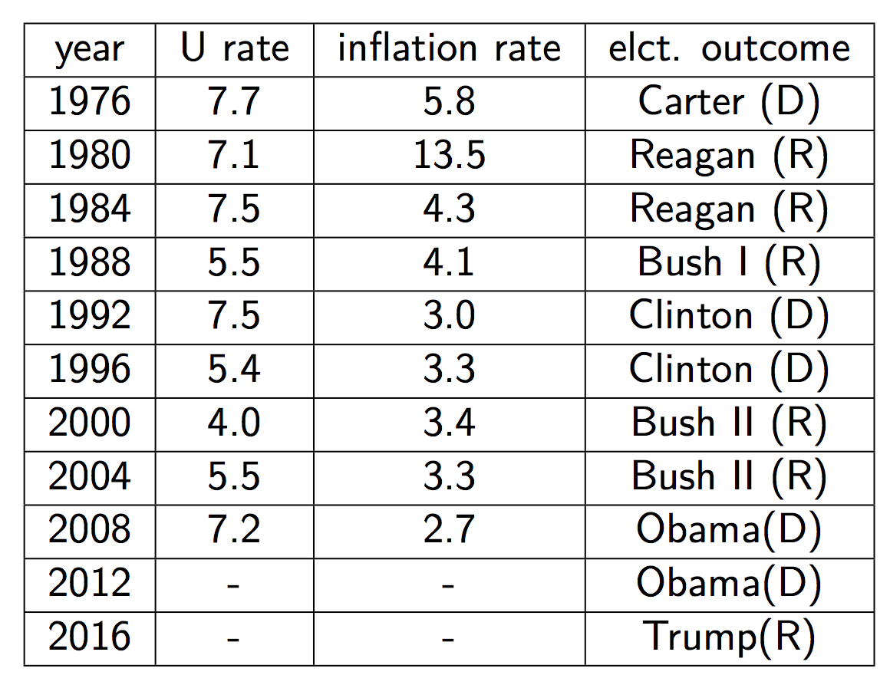

导论¶
问题：无处不在的宏观经济¶
You may not know it, but your everyday life is filled with macroeconomics in action.
- 日常直观的感受，物价水平总是在涨。现在的学费比起十年前高出不少，现在的面包比起十年前价格高出不少。为什么物价水平会不断地上涨？
- 六十年代末七十年代初出生的人都能感受到在1992-1996年之间寻找工作比2008年之后的年份要容易一些，社会的下岗工人也少一些，到底是哪些因素造成了这样的差别？为什么有的人会找不到工作？
- 是什么因素决定一个国家整体经济的福利的改变?为什么世界上有的国家非常富裕，而有的国家非常贫穷?是什么因素决定了不同国家收入的差异?
- 中国自改革开放以来，经济保持着持续增长的劲头，年均增长速度位于世界前列。是什么造成了中国经济的持续增长?
- 几乎每个中国人都感受到了生活水平相比我们的父辈有明显的提高，那么我们的下一代也能有比我们更优越的生活吗？
- 政府对经济衰退可以采取应对措施吗？应该采取措施吗？（美国7000亿美元救市、中国4万亿人民币投资刺激计划）
- 为什么各国央行经常要调整基准利率?
- …...
宏观就在身边，它是如此生动，如此贴近我们的生活
数据：宏观与我们生活息息相关¶
宏观经济影响整个社会的福利水平。例如，失业和社会问题——失业率每增加1个百分点，将会引起:
- 自杀人数增加920
- 谋杀增加650起
- 4000人 发生精神疾患
- 3300人被关进监狱
- 37,000 人死亡
- 暴力事件和无家可归者增加
- 数据来源：Barry Bluestone and Bennett Harrison, The Deindustrialization of America (New York: Basic Books, 1982), Chapter 3
宏观经济影响个人的福利水平。例如，
失业和收入增长
利率和房贷利息
- 
宏观经济影响政治和时事事件，如果美国大选选情

宏观政策调控每个人的行为
- 在利率很低时，物价指数也向下降，说明经济形势已经变“冷”了。企业、银行和政府的日子就都不好过了......，政府会怎么办?
- 1 鼓励消费
- 2 扩大投资
- 3 加大出口
- 政府在使出上述招数时，就是表明它在进行“宏观调控”
- 这些数据与政策措施哪一个不与我们个人息息相关呢?
- 这些问题不仅与我们日常的生活密切相关，同时也是现代宏观经济学研究的核心问题。
- 宏观经济学知识是每个经济人都必须掌握的知识。
- The purpose of this course is to give you a way of thinking about these issues.
- 但是，问题形形色色，必须简化、归纳为几个主要问题......
宏观经济学的基本内容¶
- 宏观经济学是研究国民经济的总量行为及其规律的经济学科，着重考察和说明国民收入、就业水平、价格水平等经济总量是如何决定的、如何波动 的等问题。